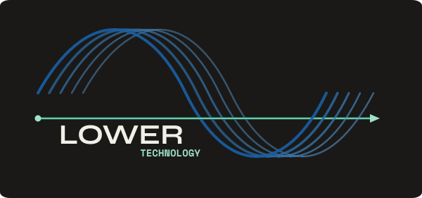

A consulting and software company built on the conviction that when it comes to data, the thankless foundational work is the most important.
We focus on data system design, process improvement, documentation, and governance. We also like to build things!
The logo is a mountain pass — the route through the valley instead of over the summit. Less impressive to talk about at a conference. Much better to actually travel.
This is the whole idea. Enterprise data platforms are built to scale to hundreds of engineers and billions of events. Most of our clients have one analyst and a spreadsheet or a system hacked together over time. The right answer for them isn't a smaller version of the enterprise platform — it's a different path entirely.

We bias toward explainable solutions. The one your team can understand and build upon. Complex systems are impressive until you have to figure out what broke
Every engagement ends with a documented, maintainable deliverable your team can own. We're not interested in creating dependencies. Good consulting should reduce the need for more consulting.
We'll tell you if DuckDB is a better answer than Snowflake for your use case. We'll recommend Metabase over Looker if it fits your budget. The goal is solving your problem, not building a portfolio piece.
With a career spanning pre-ipo startups (Affirm, Nerdwallet), Fortune 500 companies (Goldman Sachs), and the public sector (City and County of San Francisco, New Orleans Inspector General), Dan has built teams and data solutions across a diverse set of industries and organizational structures.
He started Lower Technology because working on the thankless foundational work is weirdly what he likes to do and fortunately what he is good at.
If you're working on something that matters and your data infrastructure is getting in the way, we'd like to hear about it.
Get in Touch